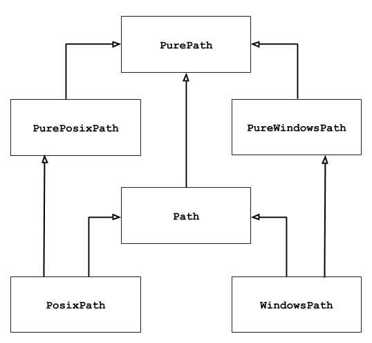

pathlib — 객체 지향 파일 시스템 경로¶
Added in version 3.4.
Source code: Lib/pathlib/
이 모듈은 다른 운영 체제에 적합한 의미 체계를 가진 파일 시스템 경로를 나타내는 클래스를 제공합니다. 경로 클래스는 I/O 없이 순수한 계산 연산을 제공하는 순수한 경로와 순수한 경로를 상속하지만, I/O 연산도 제공하는 구상 경로로 구분됩니다.

이전에 이 모듈을 사용한 적이 없거나 어떤 클래스가 작업에 적합한지 확신이 없다면, Path가 가장 적합할 가능성이 높습니다. 코드가 실행되는 플랫폼의 구상 경로를 인스턴스화 합니다.
순수한 경로는 특별한 경우에 유용합니다; 예를 들면:
유닉스 기계에서 윈도우 경로를 조작하려고 할 때 (또는 그 반대). 유닉스에서 실행할 때는
WindowsPath를 인스턴스화 할 수 없지만,PureWindowsPath는 인스턴스화 할 수 있습니다.코드가 실제로 OS에 액세스하지 않고 경로만 조작한다는 확신이 필요할 때. 이 경우, 순수 클래스 중 하나를 인스턴스화 하면 OS 액세스 연산이 없어서 유용 할 수 있습니다.
더 보기
PEP 428: pathlib 모듈 – 객체 지향 파일 시스템 경로.
더 보기
문자열에 대한 저수준 경로 조작을 위해, os.path 모듈을 사용할 수도 있습니다.
기본 사용¶
메인 클래스 임포트 하기:
>>> from pathlib import Path
서브 디렉터리 나열하기:
>>> p = Path('.')
>>> [x for x in p.iterdir() if x.is_dir()]
[PosixPath('.hg'), PosixPath('docs'), PosixPath('dist'),
PosixPath('__pycache__'), PosixPath('build')]
이 디렉터리 트리에 있는 파이썬 소스 파일 나열하기:
>>> list(p.glob('**/*.py'))
[PosixPath('test_pathlib.py'), PosixPath('setup.py'),
PosixPath('pathlib.py'), PosixPath('docs/conf.py'),
PosixPath('build/lib/pathlib.py')]
디렉터리 트리 내에서 탐색하기:
>>> p = Path('/etc')
>>> q = p / 'init.d' / 'reboot'
>>> q
PosixPath('/etc/init.d/reboot')
>>> q.resolve()
PosixPath('/etc/rc.d/init.d/halt')
경로 속성 조회하기:
>>> q.exists()
True
>>> q.is_dir()
False
파일 열기:
>>> with q.open() as f: f.readline()
...
'#!/bin/bash\n'
Exceptions¶
- exception pathlib.UnsupportedOperation¶
An exception inheriting
NotImplementedErrorthat is raised when an unsupported operation is called on a path object.Added in version 3.13.
순수한 경로¶
순수한 경로 객체는 실제로 파일 시스템에 액세스하지 않는 경로 처리 연산을 제공합니다. 이 클래스에 액세스하는 방법에는 세 가지가 있으며, 플레이버(flavours)라고도 부릅니다:
- class pathlib.PurePath(*pathsegments)¶
시스템의 경로 플레이버를 나타내는 일반 클래스 (인스턴스화 하면
PurePosixPath나PureWindowsPath를 만듭니다):>>> PurePath('setup.py') # Running on a Unix machine PurePosixPath('setup.py')
Each element of pathsegments can be either a string representing a path segment, or an object implementing the
os.PathLikeinterface where the__fspath__()method returns a string, such as another path object:>>> PurePath('foo', 'some/path', 'bar') PurePosixPath('foo/some/path/bar') >>> PurePath(Path('foo'), Path('bar')) PurePosixPath('foo/bar')
pathsegments가 비어 있으면, 현재 디렉터리를 가정합니다:
>>> PurePath() PurePosixPath('.')
If a segment is an absolute path, all previous segments are ignored (like
os.path.join()):>>> PurePath('/etc', '/usr', 'lib64') PurePosixPath('/usr/lib64') >>> PureWindowsPath('c:/Windows', 'd:bar') PureWindowsPath('d:bar')
On Windows, the drive is not reset when a rooted relative path segment (e.g.,
r'\foo') is encountered:>>> PureWindowsPath('c:/Windows', '/Program Files') PureWindowsPath('c:/Program Files')
Spurious slashes and single dots are collapsed, but double dots (
'..') and leading double slashes ('//') are not, since this would change the meaning of a path for various reasons (e.g. symbolic links, UNC paths):>>> PurePath('foo//bar') PurePosixPath('foo/bar') >>> PurePath('//foo/bar') PurePosixPath('//foo/bar') >>> PurePath('foo/./bar') PurePosixPath('foo/bar') >>> PurePath('foo/../bar') PurePosixPath('foo/../bar')
(나이브한 접근법은
PurePosixPath('foo/../bar')를PurePosixPath('bar')와 동등하게 만드는데,foo가 다른 디렉터리에 대한 심볼릭 링크일 때는 잘못됩니다)순수한 경로 객체는
os.PathLike인터페이스를 구현하여, 이 인터페이스가 허용되는 모든 위치에서 사용할 수 있습니다.버전 3.6에서 변경:
os.PathLike인터페이스에 대한 지원이 추가되었습니다.
- class pathlib.PurePosixPath(*pathsegments)¶
PurePath의 서브 클래스, 이 경로 플레이버는 윈도우 이외의 파일 시스템 경로를 나타냅니다:>>> PurePosixPath('/etc/hosts') PurePosixPath('/etc/hosts')
pathsegments는
PurePath와 유사하게 지정됩니다.
- class pathlib.PureWindowsPath(*pathsegments)¶
A subclass of
PurePath, this path flavour represents Windows filesystem paths, including UNC paths:>>> PureWindowsPath('c:/', 'Users', 'Ximénez') PureWindowsPath('c:/Users/Ximénez') >>> PureWindowsPath('//server/share/file') PureWindowsPath('//server/share/file')
pathsegments는
PurePath와 유사하게 지정됩니다.
실행 중인 시스템과 관계없이, 이러한 모든 클래스를 인스턴스화 할 수 있는데, 시스템 호출을 수행하는 연산을 제공하지 않기 때문입니다.
일반 속성¶
Paths are immutable and hashable. Paths of a same flavour are comparable and orderable. These properties respect the flavour’s case-folding semantics:
>>> PurePosixPath('foo') == PurePosixPath('FOO')
False
>>> PureWindowsPath('foo') == PureWindowsPath('FOO')
True
>>> PureWindowsPath('FOO') in { PureWindowsPath('foo') }
True
>>> PureWindowsPath('C:') < PureWindowsPath('d:')
True
다른 플레이버의 경로는 다르다고 비교되며 대소 비교할 수 없습니다:
>>> PureWindowsPath('foo') == PurePosixPath('foo')
False
>>> PureWindowsPath('foo') < PurePosixPath('foo')
Traceback (most recent call last):
File "<stdin>", line 1, in <module>
TypeError: '<' not supported between instances of 'PureWindowsPath' and 'PurePosixPath'
연산자¶
The slash operator helps create child paths, like os.path.join().
If the argument is an absolute path, the previous path is ignored.
On Windows, the drive is not reset when the argument is a rooted
relative path (e.g., r'\foo'):
>>> p = PurePath('/etc')
>>> p
PurePosixPath('/etc')
>>> p / 'init.d' / 'apache2'
PurePosixPath('/etc/init.d/apache2')
>>> q = PurePath('bin')
>>> '/usr' / q
PurePosixPath('/usr/bin')
>>> p / '/an_absolute_path'
PurePosixPath('/an_absolute_path')
>>> PureWindowsPath('c:/Windows', '/Program Files')
PureWindowsPath('c:/Program Files')
경로 객체는 os.PathLike을 구현하는 객체가 허용되는 모든 곳에서 사용할 수 있습니다:
>>> import os
>>> p = PurePath('/etc')
>>> os.fspath(p)
'/etc'
경로의 문자열 표현은 원시 파일 시스템 경로 자체(네이티브 형식으로, 예를 들어 윈도우에서 역 슬래시)로, 파일 경로를 문자열로 받아들이는 모든 함수에 전달할 수 있습니다:
>>> p = PurePath('/etc')
>>> str(p)
'/etc'
>>> p = PureWindowsPath('c:/Program Files')
>>> str(p)
'c:\\Program Files'
마찬가지로, 경로에 대해 bytes를 호출하면 os.fsencode()로 인코딩된 바이트열 객체로 원시 파일 시스템 경로를 제공합니다:
>>> bytes(p)
b'/etc'
참고
bytes 호출은 유닉스에서만 권장됩니다. 윈도우에서, 유니코드 형식이 파일 시스템 경로의 규범적(canonical) 표현입니다.
개별 부분에 액세스하기¶
경로의 개별 “부분”(구성 요소)에 액세스하려면, 다음 프로퍼티를 사용하십시오:
- PurePath.parts¶
경로의 다양한 구성 요소로의 액세스를 제공하는 튜플:
>>> p = PurePath('/usr/bin/python3') >>> p.parts ('/', 'usr', 'bin', 'python3') >>> p = PureWindowsPath('c:/Program Files/PSF') >>> p.parts ('c:\\', 'Program Files', 'PSF')
(드라이브와 로컬 루트가 단일 부분으로 다시 그룹화되는 방식에 유의하십시오)
메서드와 프로퍼티¶
순수한 경로는 다음과 같은 메서드와 프로퍼티를 제공합니다:
- PurePath.parser¶
The implementation of the
os.pathmodule used for low-level path parsing and joining: eitherposixpathorntpath.Added in version 3.13.
- PurePath.drive¶
드라이브 문자나 이름을 나타내는 문자열, 있다면:
>>> PureWindowsPath('c:/Program Files/').drive 'c:' >>> PureWindowsPath('/Program Files/').drive '' >>> PurePosixPath('/etc').drive ''
UNC 공유도 드라이브로 간주합니다:
>>> PureWindowsPath('//host/share/foo.txt').drive '\\\\host\\share'
- PurePath.root¶
(로컬이나 글로벌) 루트를 나타내는 문자열, 있다면:
>>> PureWindowsPath('c:/Program Files/').root '\\' >>> PureWindowsPath('c:Program Files/').root '' >>> PurePosixPath('/etc').root '/'
UNC 공유에는 항상 루트가 있습니다:
>>> PureWindowsPath('//host/share').root '\\'
If the path starts with more than two successive slashes,
PurePosixPathcollapses them:>>> PurePosixPath('//etc').root '//' >>> PurePosixPath('///etc').root '/' >>> PurePosixPath('////etc').root '/'
참고
This behavior conforms to The Open Group Base Specifications Issue 6, paragraph 4.11 Pathname Resolution:
“A pathname that begins with two successive slashes may be interpreted in an implementation-defined manner, although more than two leading slashes shall be treated as a single slash.”
- PurePath.anchor¶
드라이브와 루트의 이어 붙이기:
>>> PureWindowsPath('c:/Program Files/').anchor 'c:\\' >>> PureWindowsPath('c:Program Files/').anchor 'c:' >>> PurePosixPath('/etc').anchor '/' >>> PureWindowsPath('//host/share').anchor '\\\\host\\share\\'
- PurePath.parents¶
경로의 논리적 조상에 대한 액세스를 제공하는 불변 시퀀스:
>>> p = PureWindowsPath('c:/foo/bar/setup.py') >>> p.parents[0] PureWindowsPath('c:/foo/bar') >>> p.parents[1] PureWindowsPath('c:/foo') >>> p.parents[2] PureWindowsPath('c:/')
버전 3.10에서 변경: The parents sequence now supports slices and negative index values.
- PurePath.parent¶
경로의 논리적 부모:
>>> p = PurePosixPath('/a/b/c/d') >>> p.parent PurePosixPath('/a/b/c')
앵커나 빈 경로를 넘어갈 수 없습니다:
>>> p = PurePosixPath('/') >>> p.parent PurePosixPath('/') >>> p = PurePosixPath('.') >>> p.parent PurePosixPath('.')
참고
이것은 순수한 어휘(lexical) 연산이라서, 다음과 같이 동작합니다:
>>> p = PurePosixPath('foo/..') >>> p.parent PurePosixPath('foo')
If you want to walk an arbitrary filesystem path upwards, it is recommended to first call
Path.resolve()so as to resolve symlinks and eliminate".."components.
- PurePath.name¶
드라이브와 루트를 제외하고, 마지막 경로 구성 요소를 나타내는 문자열, 있다면:
>>> PurePosixPath('my/library/setup.py').name 'setup.py'
UNC 드라이브 이름은 고려되지 않습니다:
>>> PureWindowsPath('//some/share/setup.py').name 'setup.py' >>> PureWindowsPath('//some/share').name ''
- PurePath.suffix¶
The last dot-separated portion of the final component, if any:
>>> PurePosixPath('my/library/setup.py').suffix '.py' >>> PurePosixPath('my/library.tar.gz').suffix '.gz' >>> PurePosixPath('my/library').suffix ''
This is commonly called the file extension.
버전 3.14에서 변경: A single dot (”
.”) is considered a valid suffix.
- PurePath.suffixes¶
A list of the path’s suffixes, often called file extensions:
>>> PurePosixPath('my/library.tar.gar').suffixes ['.tar', '.gar'] >>> PurePosixPath('my/library.tar.gz').suffixes ['.tar', '.gz'] >>> PurePosixPath('my/library').suffixes []
버전 3.14에서 변경: A single dot (”
.”) is considered a valid suffix.
- PurePath.stem¶
suffix가 없는, 마지막 경로 구성 요소:
>>> PurePosixPath('my/library.tar.gz').stem 'library.tar' >>> PurePosixPath('my/library.tar').stem 'library' >>> PurePosixPath('my/library').stem 'library'
버전 3.14에서 변경: A single dot (”
.”) is considered a valid suffix.
- PurePath.as_posix()¶
슬래시(
/)가 있는 경로의 문자열 표현을 반환합니다:>>> p = PureWindowsPath('c:\\windows') >>> str(p) 'c:\\windows' >>> p.as_posix() 'c:/windows'
- PurePath.is_absolute()¶
경로가 절대적인지 아닌지를 반환합니다. 루트와 (플레이버가 허락하면) 드라이브가 모두 있으면 경로를 절대적이라고 간주합니다:
>>> PurePosixPath('/a/b').is_absolute() True >>> PurePosixPath('a/b').is_absolute() False >>> PureWindowsPath('c:/a/b').is_absolute() True >>> PureWindowsPath('/a/b').is_absolute() False >>> PureWindowsPath('c:').is_absolute() False >>> PureWindowsPath('//some/share').is_absolute() True
- PurePath.is_relative_to(other)¶
이 경로가 other 경로에 상대적인지를 반환합니다.
>>> p = PurePath('/etc/passwd') >>> p.is_relative_to('/etc') True >>> p.is_relative_to('/usr') False
This method is string-based; it neither accesses the filesystem nor treats “
..” segments specially. The following code is equivalent:>>> u = PurePath('/usr') >>> u == p or u in p.parents False
Added in version 3.9.
버전 3.12에서 폐지되었고, 버전 3.14에서 제거됩니다: Passing additional arguments is deprecated; if supplied, they are joined with other.
- PurePath.joinpath(*pathsegments)¶
Calling this method is equivalent to combining the path with each of the given pathsegments in turn:
>>> PurePosixPath('/etc').joinpath('passwd') PurePosixPath('/etc/passwd') >>> PurePosixPath('/etc').joinpath(PurePosixPath('passwd')) PurePosixPath('/etc/passwd') >>> PurePosixPath('/etc').joinpath('init.d', 'apache2') PurePosixPath('/etc/init.d/apache2') >>> PureWindowsPath('c:').joinpath('/Program Files') PureWindowsPath('c:/Program Files')
- PurePath.full_match(pattern, *, case_sensitive=None)¶
Match this path against the provided glob-style pattern. Return
Trueif matching is successful,Falseotherwise. For example:>>> PurePath('a/b.py').full_match('a/*.py') True >>> PurePath('a/b.py').full_match('*.py') False >>> PurePath('/a/b/c.py').full_match('/a/**') True >>> PurePath('/a/b/c.py').full_match('**/*.py') True
더 보기
Pattern language documentation.
다른 메서드와 마찬가지로, 대소 문자를 구분할지는 플랫폼 기본값을 따릅니다:
>>> PurePosixPath('b.py').full_match('*.PY') False >>> PureWindowsPath('b.py').full_match('*.PY') True
Set case_sensitive to
TrueorFalseto override this behaviour.Added in version 3.13.
- PurePath.match(pattern, *, case_sensitive=None)¶
Match this path against the provided non-recursive glob-style pattern. Return
Trueif matching is successful,Falseotherwise.This method is similar to
full_match(), but empty patterns aren’t allowed (ValueErroris raised), the recursive wildcard “**” isn’t supported (it acts like non-recursive “*”), and if a relative pattern is provided, then matching is done from the right:>>> PurePath('a/b.py').match('*.py') True >>> PurePath('/a/b/c.py').match('b/*.py') True >>> PurePath('/a/b/c.py').match('a/*.py') False
버전 3.12에서 변경: The pattern parameter accepts a path-like object.
버전 3.12에서 변경: The case_sensitive parameter was added.
- PurePath.relative_to(other, walk_up=False)¶
Compute a version of this path relative to the path represented by other. If it’s impossible,
ValueErroris raised:>>> p = PurePosixPath('/etc/passwd') >>> p.relative_to('/') PurePosixPath('etc/passwd') >>> p.relative_to('/etc') PurePosixPath('passwd') >>> p.relative_to('/usr') Traceback (most recent call last): File "<stdin>", line 1, in <module> File "pathlib.py", line 941, in relative_to raise ValueError(error_message.format(str(self), str(formatted))) ValueError: '/etc/passwd' is not in the subpath of '/usr' OR one path is relative and the other is absolute.
When walk_up is false (the default), the path must start with other. When the argument is true,
..entries may be added to form the relative path. In all other cases, such as the paths referencing different drives,ValueErroris raised.:>>> p.relative_to('/usr', walk_up=True) PurePosixPath('../etc/passwd') >>> p.relative_to('foo', walk_up=True) Traceback (most recent call last): File "<stdin>", line 1, in <module> File "pathlib.py", line 941, in relative_to raise ValueError(error_message.format(str(self), str(formatted))) ValueError: '/etc/passwd' is not on the same drive as 'foo' OR one path is relative and the other is absolute.
경고
This function is part of
PurePathand works with strings. It does not check or access the underlying file structure. This can impact the walk_up option as it assumes that no symlinks are present in the path; callresolve()first if necessary to resolve symlinks.버전 3.12에서 변경: The walk_up parameter was added (old behavior is the same as
walk_up=False).버전 3.12에서 폐지되었고, 버전 3.14에서 제거됩니다: Passing additional positional arguments is deprecated; if supplied, they are joined with other.
- PurePath.with_name(name)¶
name이 변경된 새 경로를 반환합니다. 원래 경로에 이름(name)이 없으면 ValueError가 발생합니다:>>> p = PureWindowsPath('c:/Downloads/pathlib.tar.gz') >>> p.with_name('setup.py') PureWindowsPath('c:/Downloads/setup.py') >>> p = PureWindowsPath('c:/') >>> p.with_name('setup.py') Traceback (most recent call last): File "<stdin>", line 1, in <module> File "/home/antoine/cpython/default/Lib/pathlib.py", line 751, in with_name raise ValueError("%r has an empty name" % (self,)) ValueError: PureWindowsPath('c:/') has an empty name
- PurePath.with_stem(stem)¶
stem이 변경된 새 경로를 반환합니다. 원래 경로에 이름(name)이 없으면, ValueError가 발생합니다:>>> p = PureWindowsPath('c:/Downloads/draft.txt') >>> p.with_stem('final') PureWindowsPath('c:/Downloads/final.txt') >>> p = PureWindowsPath('c:/Downloads/pathlib.tar.gz') >>> p.with_stem('lib') PureWindowsPath('c:/Downloads/lib.gz') >>> p = PureWindowsPath('c:/') >>> p.with_stem('') Traceback (most recent call last): File "<stdin>", line 1, in <module> File "/home/antoine/cpython/default/Lib/pathlib.py", line 861, in with_stem return self.with_name(stem + self.suffix) File "/home/antoine/cpython/default/Lib/pathlib.py", line 851, in with_name raise ValueError("%r has an empty name" % (self,)) ValueError: PureWindowsPath('c:/') has an empty name
Added in version 3.9.
- PurePath.with_suffix(suffix)¶
suffix가 변경된 새 경로를 반환합니다. 원래 경로에 접미사(suffix)가 없으면, 새 suffix가 대신 추가됩니다. suffix가 빈 문자열이면, 원래 접미사가 제거됩니다:>>> p = PureWindowsPath('c:/Downloads/pathlib.tar.gz') >>> p.with_suffix('.bz2') PureWindowsPath('c:/Downloads/pathlib.tar.bz2') >>> p = PureWindowsPath('README') >>> p.with_suffix('.txt') PureWindowsPath('README.txt') >>> p = PureWindowsPath('README.txt') >>> p.with_suffix('') PureWindowsPath('README')
버전 3.14에서 변경: A single dot (”
.”) is considered a valid suffix. In previous versions,ValueErroris raised if a single dot is supplied.
- PurePath.with_segments(*pathsegments)¶
Create a new path object of the same type by combining the given pathsegments. This method is called whenever a derivative path is created, such as from
parentandrelative_to(). Subclasses may override this method to pass information to derivative paths, for example:from pathlib import PurePosixPath class MyPath(PurePosixPath): def __init__(self, *pathsegments, session_id): super().__init__(*pathsegments) self.session_id = session_id def with_segments(self, *pathsegments): return type(self)(*pathsegments, session_id=self.session_id) etc = MyPath('/etc', session_id=42) hosts = etc / 'hosts' print(hosts.session_id) # 42
Added in version 3.12.
구상 경로¶
구상 경로는 순수한 경로 클래스의 서브 클래스입니다. 후자가 제공하는 연산 외에도, 경로 객체에 대해 시스템 호출을 수행하는 메서드도 제공합니다. 구상 경로를 인스턴스화 하는 세 가지 방법이 있습니다:
- class pathlib.Path(*pathsegments)¶
PurePath의 서브 클래스, 이 클래스는 시스템의 경로 플레이버의 구상 경로를 나타냅니다 (인스턴스화 하면PosixPath나WindowsPath를 만듭니다):>>> Path('setup.py') PosixPath('setup.py')
pathsegments는
PurePath와 유사하게 지정됩니다.
- class pathlib.PosixPath(*pathsegments)¶
Path와PurePosixPath의 서브 클래스, 이 클래스는 윈도우 이외의 구상 파일 시스템 경로를 나타냅니다:>>> PosixPath('/etc/hosts') PosixPath('/etc/hosts')
pathsegments는
PurePath와 유사하게 지정됩니다.버전 3.13에서 변경: Raises
UnsupportedOperationon Windows. In previous versions,NotImplementedErrorwas raised instead.
- class pathlib.WindowsPath(*pathsegments)¶
Path와PureWindowsPath의 서브 클래스, 이 클래스는 구상 윈도우 파일 시스템 경로를 나타냅니다:>>> WindowsPath('c:/', 'Users', 'Ximénez') WindowsPath('c:/Users/Ximénez')
pathsegments는
PurePath와 유사하게 지정됩니다.버전 3.13에서 변경: Raises
UnsupportedOperationon non-Windows platforms. In previous versions,NotImplementedErrorwas raised instead.
여러분의 시스템에 해당하는 클래스 플레이버만 인스턴스화 할 수 있습니다 (호환되지 않는 경로 플레이버에 대한 시스템 호출을 허용하면 응용 프로그램에서 버그나 실패가 발생할 수 있습니다):
>>> import os
>>> os.name
'posix'
>>> Path('setup.py')
PosixPath('setup.py')
>>> PosixPath('setup.py')
PosixPath('setup.py')
>>> WindowsPath('setup.py')
Traceback (most recent call last):
File "<stdin>", line 1, in <module>
File "pathlib.py", line 798, in __new__
% (cls.__name__,))
UnsupportedOperation: cannot instantiate 'WindowsPath' on your system
Some concrete path methods can raise an OSError if a system call fails
(for example because the path doesn’t exist).
Parsing and generating URIs¶
Concrete path objects can be created from, and represented as, ‘file’ URIs conforming to RFC 8089.
참고
File URIs are not portable across machines with different filesystem encodings.
- classmethod Path.from_uri(uri)¶
Return a new path object from parsing a ‘file’ URI. For example:
>>> p = Path.from_uri('file:///etc/hosts') PosixPath('/etc/hosts')
On Windows, DOS device and UNC paths may be parsed from URIs:
>>> p = Path.from_uri('file:///c:/windows') WindowsPath('c:/windows') >>> p = Path.from_uri('file://server/share') WindowsPath('//server/share')
Several variant forms are supported:
>>> p = Path.from_uri('file:////server/share') WindowsPath('//server/share') >>> p = Path.from_uri('file://///server/share') WindowsPath('//server/share') >>> p = Path.from_uri('file:c:/windows') WindowsPath('c:/windows') >>> p = Path.from_uri('file:/c|/windows') WindowsPath('c:/windows')
ValueErroris raised if the URI does not start withfile:, or the parsed path isn’t absolute.Added in version 3.13.
버전 3.14에서 변경: The URL authority is discarded if it matches the local hostname. Otherwise, if the authority isn’t empty or
localhost, then on Windows a UNC path is returned (as before), and on other platforms aValueErroris raised.
- Path.as_uri()¶
Represent the path as a ‘file’ URI.
ValueErroris raised if the path isn’t absolute.>>> p = PosixPath('/etc/passwd') >>> p.as_uri() 'file:///etc/passwd' >>> p = WindowsPath('c:/Windows') >>> p.as_uri() 'file:///c:/Windows'
버전 3.14에서 폐지되었고, 버전 3.19에서 제거됩니다: Calling this method from
PurePathrather thanPathis possible but deprecated. The method’s use ofos.fsencode()makes it strictly impure.
Expanding and resolving paths¶
- classmethod Path.home()¶
Return a new path object representing the user’s home directory (as returned by
os.path.expanduser()with~construct). If the home directory can’t be resolved,RuntimeErroris raised.>>> Path.home() PosixPath('/home/antoine')
Added in version 3.5.
- Path.expanduser()¶
Return a new path with expanded
~and~userconstructs, as returned byos.path.expanduser(). If a home directory can’t be resolved,RuntimeErroris raised.>>> p = PosixPath('~/films/Monty Python') >>> p.expanduser() PosixPath('/home/eric/films/Monty Python')
Added in version 3.5.
- classmethod Path.cwd()¶
현재 디렉터리를 나타내는 새 경로 객체를 반환합니다.
os.getcwd()가 반환하는 것과 유사합니다:>>> Path.cwd() PosixPath('/home/antoine/pathlib')
- Path.absolute()¶
Make the path absolute, without normalization or resolving symlinks. Returns a new path object:
>>> p = Path('tests') >>> p PosixPath('tests') >>> p.absolute() PosixPath('/home/antoine/pathlib/tests')
- Path.resolve(strict=False)¶
심볼릭 링크를 결정하여, 경로를 절대적으로 만듭니다. 새로운 경로 객체가 반환됩니다:
>>> p = Path() >>> p PosixPath('.') >>> p.resolve() PosixPath('/home/antoine/pathlib')
“
..” 구성 요소도 제거됩니다 (이것이 이렇게 하는 유일한 메서드입니다):>>> p = Path('docs/../setup.py') >>> p.resolve() PosixPath('/home/antoine/pathlib/setup.py')
If a path doesn’t exist or a symlink loop is encountered, and strict is
True,OSErroris raised. If strict isFalse, the path is resolved as far as possible and any remainder is appended without checking whether it exists.버전 3.6에서 변경: The strict parameter was added (pre-3.6 behavior is strict).
버전 3.13에서 변경: Symlink loops are treated like other errors:
OSErroris raised in strict mode, and no exception is raised in non-strict mode. In previous versions,RuntimeErroris raised no matter the value of strict.
- Path.readlink()¶
심볼릭 링크가 가리키는 경로를 반환합니다 (
os.readlink()가 반환하는 것과 유사합니다):>>> p = Path('mylink') >>> p.symlink_to('setup.py') >>> p.readlink() PosixPath('setup.py')
Added in version 3.9.
버전 3.13에서 변경: Raises
UnsupportedOperationifos.readlink()is not available. In previous versions,NotImplementedErrorwas raised.
Querying file type and status¶
버전 3.8에서 변경: exists(), is_dir(), is_file(),
is_mount(), is_symlink(),
is_block_device(), is_char_device(),
is_fifo(), is_socket() now return False
instead of raising an exception for paths that contain characters
unrepresentable at the OS level.
버전 3.14에서 변경: The methods given above now return False instead of raising any
OSError exception from the operating system. In previous versions,
some kinds of OSError exception are raised, and others suppressed.
The new behaviour is consistent with os.path.exists(),
os.path.isdir(), etc. Use stat() to retrieve the file
status without suppressing exceptions.
- Path.stat(*, follow_symlinks=True)¶
Return an
os.stat_resultobject containing information about this path, likeos.stat(). The result is looked up at each call to this method.This method normally follows symlinks; to stat a symlink add the argument
follow_symlinks=False, or uselstat().>>> p = Path('setup.py') >>> p.stat().st_size 956 >>> p.stat().st_mtime 1327883547.852554
버전 3.10에서 변경: The follow_symlinks parameter was added.
- Path.lstat()¶
Path.stat()과 비슷하지만, 경로가 심볼릭 링크를 가리키면, 대상이 아닌 심볼릭 링크의 정보를 반환합니다.
- Path.exists(*, follow_symlinks=True)¶
Return
Trueif the path points to an existing file or directory.Falsewill be returned if the path is invalid, inaccessible or missing. UsePath.stat()to distinguish between these cases.This method normally follows symlinks; to check if a symlink exists, add the argument
follow_symlinks=False.>>> Path('.').exists() True >>> Path('setup.py').exists() True >>> Path('/etc').exists() True >>> Path('nonexistentfile').exists() False
버전 3.12에서 변경: The follow_symlinks parameter was added.
- Path.is_file(*, follow_symlinks=True)¶
Return
Trueif the path points to a regular file.Falsewill be returned if the path is invalid, inaccessible or missing, or if it points to something other than a regular file. UsePath.stat()to distinguish between these cases.This method normally follows symlinks; to exclude symlinks, add the argument
follow_symlinks=False.버전 3.13에서 변경: The follow_symlinks parameter was added.
- Path.is_dir(*, follow_symlinks=True)¶
Return
Trueif the path points to a directory.Falsewill be returned if the path is invalid, inaccessible or missing, or if it points to something other than a directory. UsePath.stat()to distinguish between these cases.This method normally follows symlinks; to exclude symlinks to directories, add the argument
follow_symlinks=False.버전 3.13에서 변경: The follow_symlinks parameter was added.
- Path.is_symlink()¶
Return
Trueif the path points to a symbolic link, even if that symlink is broken.Falsewill be returned if the path is invalid, inaccessible or missing, or if it points to something other than a symbolic link. UsePath.stat()to distinguish between these cases.
- Path.is_junction()¶
Return
Trueif the path points to a junction, andFalsefor any other type of file. Currently only Windows supports junctions.Added in version 3.12.
- Path.is_mount()¶
Return
Trueif the path is a mount point: a point in a file system where a different file system has been mounted. On POSIX, the function checks whether path’s parent,path/.., is on a different device than path, or whetherpath/..and path point to the same i-node on the same device — this should detect mount points for all Unix and POSIX variants. On Windows, a mount point is considered to be a drive letter root (e.g.c:\), a UNC share (e.g.\\server\share), or a mounted filesystem directory.Added in version 3.7.
버전 3.12에서 변경: Windows support was added.
- Path.is_socket()¶
Return
Trueif the path points to a Unix socket.Falsewill be returned if the path is invalid, inaccessible or missing, or if it points to something other than a Unix socket. UsePath.stat()to distinguish between these cases.
- Path.is_fifo()¶
Return
Trueif the path points to a FIFO.Falsewill be returned if the path is invalid, inaccessible or missing, or if it points to something other than a FIFO. UsePath.stat()to distinguish between these cases.
- Path.is_block_device()¶
Return
Trueif the path points to a block device.Falsewill be returned if the path is invalid, inaccessible or missing, or if it points to something other than a block device. UsePath.stat()to distinguish between these cases.
- Path.is_char_device()¶
Return
Trueif the path points to a character device.Falsewill be returned if the path is invalid, inaccessible or missing, or if it points to something other than a character device. UsePath.stat()to distinguish between these cases.
- Path.samefile(other_path)¶
이 경로가 other_path와 같은 파일을 가리키는지를 반환합니다. other_path는 Path 객체이거나 문자열일 수 있습니다. 의미는
os.path.samefile()과os.path.samestat()과 유사합니다.어떤 이유로 파일에 액세스할 수 없으면
OSError가 발생할 수 있습니다.>>> p = Path('spam') >>> q = Path('eggs') >>> p.samefile(q) False >>> p.samefile('spam') True
Added in version 3.5.
- Path.info¶
A
PathInfoobject that supports querying file type information. The object exposes methods that cache their results, which can help reduce the number of system calls needed when switching on file type. For example:>>> p = Path('src') >>> if p.info.is_symlink(): ... print('symlink') ... elif p.info.is_dir(): ... print('directory') ... elif p.info.exists(): ... print('something else') ... else: ... print('not found') ... directory
If the path was generated from
Path.iterdir()then this attribute is initialized with some information about the file type gleaned from scanning the parent directory. Merely accessingPath.infodoes not perform any filesystem queries.To fetch up-to-date information, it’s best to call
Path.is_dir(),is_file()andis_symlink()rather than methods of this attribute. There is no way to reset the cache; instead you can create a new path object with an empty info cache viap = Path(p).Added in version 3.14.
Reading and writing files¶
- Path.open(mode='r', buffering=-1, encoding=None, errors=None, newline=None)¶
내장
open()함수처럼, 경로가 가리키는 파일을 엽니다:>>> p = Path('setup.py') >>> with p.open() as f: ... f.readline() ... '#!/usr/bin/env python3\n'
- Path.read_text(encoding=None, errors=None, newline=None)¶
가리키는 파일의 디코딩된 내용을 문자열로 반환합니다:
>>> p = Path('my_text_file') >>> p.write_text('Text file contents') 18 >>> p.read_text() 'Text file contents'
파일이 열린 다음에 닫힙니다. 선택적 매개 변수는
open()과 같은 의미입니다.Added in version 3.5.
버전 3.13에서 변경: The newline parameter was added.
- Path.read_bytes()¶
가리키는 파일의 바이너리 내용을 바이트열 객체로 반환합니다:
>>> p = Path('my_binary_file') >>> p.write_bytes(b'Binary file contents') 20 >>> p.read_bytes() b'Binary file contents'
Added in version 3.5.
- Path.write_text(data, encoding=None, errors=None, newline=None)¶
가리키는 파일을 텍스트 모드로 열고, data를 쓴 다음, 파일을 닫습니다:
>>> p = Path('my_text_file') >>> p.write_text('Text file contents') 18 >>> p.read_text() 'Text file contents'
Return the number of characters written.
같은 이름의 기존 파일을 덮어씁니다. 선택적 매개 변수는
open()에서와 같은 의미입니다.Added in version 3.5.
버전 3.10에서 변경: The newline parameter was added.
- Path.write_bytes(data)¶
가리키는 파일을 바이너리 모드로 열고, data를 쓴 다음, 파일을 닫습니다:
>>> p = Path('my_binary_file') >>> p.write_bytes(b'Binary file contents') 20 >>> p.read_bytes() b'Binary file contents'
Return the number of bytes written.
같은 이름의 기존 파일을 덮어씁니다.
Added in version 3.5.
Reading directories¶
- Path.iterdir()¶
경로가 디렉터리를 가리킬 때, 디렉터리 내용의 경로 객체를 산출합니다:
>>> p = Path('docs') >>> for child in p.iterdir(): child ... PosixPath('docs/conf.py') PosixPath('docs/_templates') PosixPath('docs/make.bat') PosixPath('docs/index.rst') PosixPath('docs/_build') PosixPath('docs/_static') PosixPath('docs/Makefile')
The children are yielded in arbitrary order, and the special entries
'.'and'..'are not included. If a file is removed from or added to the directory after creating the iterator, it is unspecified whether a path object for that file is included.If the path is not a directory or otherwise inaccessible,
OSErroris raised.
- Path.glob(pattern, *, case_sensitive=None, recurse_symlinks=False)¶
이 경로로 표현되는 디렉터리에서, 주어진 상대 pattern을 glob 하여, 일치하는 모든 파일을 (종류와 관계없이) 산출합니다:
>>> sorted(Path('.').glob('*.py')) [PosixPath('pathlib.py'), PosixPath('setup.py'), PosixPath('test_pathlib.py')] >>> sorted(Path('.').glob('*/*.py')) [PosixPath('docs/conf.py')] >>> sorted(Path('.').glob('**/*.py')) [PosixPath('build/lib/pathlib.py'), PosixPath('docs/conf.py'), PosixPath('pathlib.py'), PosixPath('setup.py'), PosixPath('test_pathlib.py')]
참고
The paths are returned in no particular order. If you need a specific order, sort the results.
더 보기
Pattern language documentation.
By default, or when the case_sensitive keyword-only argument is set to
None, this method matches paths using platform-specific casing rules: typically, case-sensitive on POSIX, and case-insensitive on Windows. Set case_sensitive toTrueorFalseto override this behaviour.By default, or when the recurse_symlinks keyword-only argument is set to
False, this method follows symlinks except when expanding “**” wildcards. Set recurse_symlinks toTrueto always follow symlinks.참고
Any
OSErrorexceptions raised from scanning the filesystem are suppressed. This includesPermissionErrorwhen accessing directories without read permission.인자
self,pattern으로 감사 이벤트pathlib.Path.glob을 발생시킵니다.버전 3.12에서 변경: The case_sensitive parameter was added.
버전 3.13에서 변경: The recurse_symlinks parameter was added.
버전 3.13에서 변경: The pattern parameter accepts a path-like object.
버전 3.13에서 변경: Any
OSErrorexceptions raised from scanning the filesystem are suppressed. In previous versions, such exceptions are suppressed in many cases, but not all.
- Path.rglob(pattern, *, case_sensitive=None, recurse_symlinks=False)¶
Glob the given relative pattern recursively. This is like calling
Path.glob()with “**/” added in front of the pattern.참고
The paths are returned in no particular order. If you need a specific order, sort the results.
참고
Any
OSErrorexceptions raised from scanning the filesystem are suppressed. This includesPermissionErrorwhen accessing directories without read permission.더 보기
Pattern language and
Path.glob()documentation.인자
self,pattern으로 감사 이벤트pathlib.Path.rglob을 발생시킵니다.버전 3.12에서 변경: The case_sensitive parameter was added.
버전 3.13에서 변경: The recurse_symlinks parameter was added.
버전 3.13에서 변경: The pattern parameter accepts a path-like object.
- Path.walk(top_down=True, on_error=None, follow_symlinks=False)¶
Generate the file names in a directory tree by walking the tree either top-down or bottom-up.
For each directory in the directory tree rooted at self (including self but excluding ‘.’ and ‘..’), the method yields a 3-tuple of
(dirpath, dirnames, filenames).dirpath is a
Pathto the directory currently being walked, dirnames is a list of strings for the names of subdirectories in dirpath (excluding'.'and'..'), and filenames is a list of strings for the names of the non-directory files in dirpath. To get a full path (which begins with self) to a file or directory in dirpath, dodirpath / name. Whether or not the lists are sorted is file system-dependent.If the optional argument top_down is true (which is the default), the triple for a directory is generated before the triples for any of its subdirectories (directories are walked top-down). If top_down is false, the triple for a directory is generated after the triples for all of its subdirectories (directories are walked bottom-up). No matter the value of top_down, the list of subdirectories is retrieved before the triples for the directory and its subdirectories are walked.
When top_down is true, the caller can modify the dirnames list in-place (for example, using
delor slice assignment), andPath.walk()will only recurse into the subdirectories whose names remain in dirnames. This can be used to prune the search, or to impose a specific order of visiting, or even to informPath.walk()about directories the caller creates or renames before it resumesPath.walk()again. Modifying dirnames when top_down is false has no effect on the behavior ofPath.walk()since the directories in dirnames have already been generated by the time dirnames is yielded to the caller.By default, errors from
os.scandir()are ignored. If the optional argument on_error is specified, it should be a callable; it will be called with one argument, anOSErrorinstance. The callable can handle the error to continue the walk or re-raise it to stop the walk. Note that the filename is available as thefilenameattribute of the exception object.By default,
Path.walk()does not follow symbolic links, and instead adds them to the filenames list. Set follow_symlinks to true to resolve symlinks and place them in dirnames and filenames as appropriate for their targets, and consequently visit directories pointed to by symlinks (where supported).참고
Be aware that setting follow_symlinks to true can lead to infinite recursion if a link points to a parent directory of itself.
Path.walk()does not keep track of the directories it has already visited.참고
Path.walk()assumes the directories it walks are not modified during execution. For example, if a directory from dirnames has been replaced with a symlink and follow_symlinks is false,Path.walk()will still try to descend into it. To prevent such behavior, remove directories from dirnames as appropriate.참고
Unlike
os.walk(),Path.walk()lists symlinks to directories in filenames if follow_symlinks is false.This example displays the number of bytes used by all files in each directory, while ignoring
__pycache__directories:from pathlib import Path for root, dirs, files in Path("cpython/Lib/concurrent").walk(on_error=print): print( root, "consumes", sum((root / file).stat().st_size for file in files), "bytes in", len(files), "non-directory files" ) if '__pycache__' in dirs: dirs.remove('__pycache__')
This next example is a simple implementation of
shutil.rmtree(). Walking the tree bottom-up is essential asrmdir()doesn’t allow deleting a directory before it is empty:# Delete everything reachable from the directory "top". # CAUTION: This is dangerous! For example, if top == Path('/'), # it could delete all of your files. for root, dirs, files in top.walk(top_down=False): for name in files: (root / name).unlink() for name in dirs: (root / name).rmdir()
Added in version 3.12.
Creating files and directories¶
- Path.touch(mode=0o666, exist_ok=True)¶
Create a file at this given path. If mode is given, it is combined with the process’s
umaskvalue to determine the file mode and access flags. If the file already exists, the function succeeds when exist_ok is true (and its modification time is updated to the current time), otherwiseFileExistsErroris raised.더 보기
The
open(),write_text()andwrite_bytes()methods are often used to create files.
- Path.mkdir(mode=0o777, parents=False, exist_ok=False, *, parent_mode=None)¶
Create a new directory at this given path. If mode is given, it is combined with the process’s
umaskvalue to determine the file mode and access flags. If the path already exists,FileExistsErroris raised.parents가 참이면, 이 경로의 누락 된 부모를 필요하면 만듭니다; 이것들은 mode를 고려하지 않고 기본 권한으로 만들어집니다 (POSIX
mkdir -p명령을 모방합니다).If parent_mode is not
None, it is used as the mode for any newly-created, intermediate-level directories when parents is true. Like mode, it is combined with the process’sumaskvalue. Otherwise, intermediate directories are created with the default permissions (also subject to the umask).parents가 거짓(기본값)이면, 누락된 부모가
FileNotFoundError를 발생시킵니다.exist_ok가 거짓(기본값)이면, 대상 디렉터리가 이미 존재하면
FileExistsError가 발생합니다.If exist_ok is true,
FileExistsErrorwill not be raised unless the given path already exists in the file system and is not a directory (same behavior as the POSIXmkdir -pcommand).버전 3.5에서 변경: exist_ok 매개 변수가 추가되었습니다.
Added in version 3.15: The parent_mode parameter.
- Path.symlink_to(target, target_is_directory=False)¶
Make this path a symbolic link pointing to target.
On Windows, a symlink represents either a file or a directory, and does not morph to the target dynamically. If the target is present, the type of the symlink will be created to match. Otherwise, the symlink will be created as a directory if target_is_directory is true or a file symlink (the default) otherwise. On non-Windows platforms, target_is_directory is ignored.
>>> p = Path('mylink') >>> p.symlink_to('setup.py') >>> p.resolve() PosixPath('/home/antoine/pathlib/setup.py') >>> p.stat().st_size 956 >>> p.lstat().st_size 8
참고
인자의 순서(링크, 대상)는
os.symlink()와 반대입니다.버전 3.13에서 변경: Raises
UnsupportedOperationifos.symlink()is not available. In previous versions,NotImplementedErrorwas raised.
- Path.hardlink_to(target)¶
Make this path a hard link to the same file as target.
참고
The order of arguments (link, target) is the reverse of
os.link()’s.Added in version 3.10.
버전 3.13에서 변경: Raises
UnsupportedOperationifos.link()is not available. In previous versions,NotImplementedErrorwas raised.
Copying, moving and deleting¶
- Path.copy(target, *, follow_symlinks=True, preserve_metadata=False)¶
Copy this file or directory tree to the given target, and return a new
Pathinstance pointing to target.If the source is a file, the target will be replaced if it is an existing file. If the source is a symlink and follow_symlinks is true (the default), the symlink’s target is copied. Otherwise, the symlink is recreated at the destination.
If preserve_metadata is false (the default), only directory structures and file data are guaranteed to be copied. Set preserve_metadata to true to ensure that file and directory permissions, flags, last access and modification times, and extended attributes are copied where supported. This argument has no effect when copying files on Windows (where metadata is always preserved).
참고
Where supported by the operating system and file system, this method performs a lightweight copy, where data blocks are only copied when modified. This is known as copy-on-write.
Added in version 3.14.
- Path.copy_into(target_dir, *, follow_symlinks=True, preserve_metadata=False)¶
Copy this file or directory tree into the given target_dir, which should be an existing directory. Other arguments are handled identically to
Path.copy(). Returns a newPathinstance pointing to the copy.Added in version 3.14.
- Path.rename(target)¶
Rename this file or directory to the given target, and return a new
Pathinstance pointing to target. On Unix, if target exists and is a file, it will be replaced silently if the user has permission. On Windows, if target exists,FileExistsErrorwill be raised. target can be either a string or another path object:>>> p = Path('foo') >>> p.open('w').write('some text') 9 >>> target = Path('bar') >>> p.rename(target) PosixPath('bar') >>> target.open().read() 'some text'
The target path may be absolute or relative. Relative paths are interpreted relative to the current working directory, not the directory of the
Pathobject.It is implemented in terms of
os.rename()and gives the same guarantees.버전 3.8에서 변경: Added return value, return the new
Pathinstance.
- Path.replace(target)¶
Rename this file or directory to the given target, and return a new
Pathinstance pointing to target. If target points to an existing file or empty directory, it will be unconditionally replaced.The target path may be absolute or relative. Relative paths are interpreted relative to the current working directory, not the directory of the
Pathobject.버전 3.8에서 변경: Added return value, return the new
Pathinstance.
- Path.move(target)¶
Move this file or directory tree to the given target, and return a new
Pathinstance pointing to target.If the target doesn’t exist it will be created. If both this path and the target are existing files, then the target is overwritten. If both paths point to the same file or directory, or the target is a non-empty directory, then
OSErroris raised.If both paths are on the same filesystem, the move is performed with
os.replace(). Otherwise, this path is copied (preserving metadata and symlinks) and then deleted.Added in version 3.14.
- Path.move_into(target_dir)¶
Move this file or directory tree into the given target_dir, which should be an existing directory. Returns a new
Pathinstance pointing to the moved path.Added in version 3.14.
- Path.unlink(missing_ok=False)¶
이 파일이나 심볼릭 링크를 제거합니다. 경로가 디렉터리를 가리키면,
Path.rmdir()을 대신 사용하십시오.missing_ok가 거짓(기본값)이면, 경로가 없을 때
FileNotFoundError가 발생합니다.missing_ok가 참이면,
FileNotFoundError예외는 무시됩니다 (POSIXrm -f명령과 같은 동작).버전 3.8에서 변경: missing_ok 매개 변수가 추가되었습니다.
- Path.rmdir()¶
이 디렉터리를 제거합니다. 디렉터리는 비어 있어야 합니다.
Permissions and ownership¶
- Path.owner(*, follow_symlinks=True)¶
Return the name of the user owning the file.
KeyErroris raised if the file’s user identifier (UID) isn’t found in the system database.This method normally follows symlinks; to get the owner of the symlink, add the argument
follow_symlinks=False.버전 3.13에서 변경: Raises
UnsupportedOperationif thepwdmodule is not available. In earlier versions,NotImplementedErrorwas raised.버전 3.13에서 변경: The follow_symlinks parameter was added.
- Path.group(*, follow_symlinks=True)¶
Return the name of the group owning the file.
KeyErroris raised if the file’s group identifier (GID) isn’t found in the system database.This method normally follows symlinks; to get the group of the symlink, add the argument
follow_symlinks=False.버전 3.13에서 변경: Raises
UnsupportedOperationif thegrpmodule is not available. In earlier versions,NotImplementedErrorwas raised.버전 3.13에서 변경: The follow_symlinks parameter was added.
- Path.chmod(mode, *, follow_symlinks=True)¶
Change the file mode and permissions, like
os.chmod().This method normally follows symlinks. Some Unix flavours support changing permissions on the symlink itself; on these platforms you may add the argument
follow_symlinks=False, or uselchmod().>>> p = Path('setup.py') >>> p.stat().st_mode 33277 >>> p.chmod(0o444) >>> p.stat().st_mode 33060
버전 3.10에서 변경: The follow_symlinks parameter was added.
- Path.lchmod(mode)¶
Path.chmod()와 비슷하지만, 경로가 심볼릭 링크를 가리키면, 대상이 아닌 심볼릭 링크의 모드가 변경됩니다.
Pattern language¶
The following wildcards are supported in patterns for
full_match(), glob() and rglob():
**(entire segment)Matches any number of file or directory segments, including zero.
*(entire segment)Matches one file or directory segment.
*(part of a segment)Matches any number of non-separator characters, including zero.
?Matches one non-separator character.
[seq]Matches one character in seq, where seq is a sequence of characters. Range expressions are supported; for example,
[a-z]matches any lowercase ASCII letter. Multiple ranges can be combined:[a-zA-Z0-9_]matches any ASCII letter, digit, or underscore.[!seq]Matches one character not in seq, where seq follows the same rules as above.
For a literal match, wrap the meta-characters in brackets.
For example, "[?]" matches the character "?".
The “**” wildcard enables recursive globbing. A few examples:
Pattern |
Meaning |
|---|---|
“ |
Any path with at least one segment. |
“ |
Any path with a final segment ending “ |
“ |
Any path starting with “ |
“ |
Any path starting with “ |
참고
Globbing with the “**” wildcard visits every directory in the tree.
Large directory trees may take a long time to search.
버전 3.13에서 변경: Globbing with a pattern that ends with “**” returns both files and
directories. In previous versions, only directories were returned.
In Path.glob() and rglob(), a trailing slash may be added to
the pattern to match only directories.
Comparison to the glob module¶
The patterns accepted and results generated by Path.glob() and
Path.rglob() differ slightly from those by the glob module:
Files beginning with a dot are not special in pathlib. This is like passing
include_hidden=Truetoglob.glob().“
**” pattern components are always recursive in pathlib. This is like passingrecursive=Truetoglob.glob().“
**” pattern components do not follow symlinks by default in pathlib. This behaviour has no equivalent inglob.glob(), but you can passrecurse_symlinks=TruetoPath.glob()for compatible behaviour.Like all
PurePathandPathobjects, the values returned fromPath.glob()andPath.rglob()don’t include trailing slashes.The values returned from pathlib’s
path.glob()andpath.rglob()include the path as a prefix, unlike the results ofglob.glob(root_dir=path).The values returned from pathlib’s
path.glob()andpath.rglob()may include path itself, for example when globbing “**”, whereas the results ofglob.glob(root_dir=path)never include an empty string that would correspond to path.
Comparison to the os and os.path modules¶
pathlib implements path operations using PurePath and Path
objects, and so it’s said to be object-oriented. On the other hand, the
os and os.path modules supply functions that work with low-level
str and bytes objects, which is a more procedural approach. Some
users consider the object-oriented style to be more readable.
Many functions in os and os.path support bytes paths and
paths relative to directory descriptors. These features aren’t
available in pathlib.
Python’s str and bytes types, and portions of the os and
os.path modules, are written in C and are very speedy. pathlib is
written in pure Python and is often slower, but rarely slow enough to matter.
pathlib’s path normalization is slightly more opinionated and consistent than
os.path. For example, whereas os.path.abspath() eliminates
“..” segments from a path, which may change its meaning if symlinks are
involved, Path.absolute() preserves these segments for greater safety.
pathlib’s path normalization may render it unsuitable for some applications:
pathlib normalizes
Path("my_folder/")toPath("my_folder"), which changes a path’s meaning when supplied to various operating system APIs and command-line utilities. Specifically, the absence of a trailing separator may allow the path to be resolved as either a file or directory, rather than a directory only.pathlib normalizes
Path("./my_program")toPath("my_program"), which changes a path’s meaning when used as an executable search path, such as in a shell or when spawning a child process. Specifically, the absence of a separator in the path may force it to be looked up inPATHrather than the current directory.
As a consequence of these differences, pathlib is not a drop-in replacement
for os.path.
Corresponding tools¶
아래는 다양한 os 함수를 해당 PurePath/Path 대응 물에 매핑하는 표입니다.
|
|
|---|---|
Footnotes
Protocols¶
The pathlib.types module provides types for static type checking.
Added in version 3.14.
- class pathlib.types.PathInfo¶
A
typing.Protocoldescribing thePath.infoattribute. Implementations may return cached results from their methods.- exists(*, follow_symlinks=True)¶
Return
Trueif the path is an existing file or directory, or any other kind of file; returnFalseif the path doesn’t exist.If follow_symlinks is
False, returnTruefor symlinks without checking if their targets exist.
- is_dir(*, follow_symlinks=True)¶
Return
Trueif the path is a directory, or a symbolic link pointing to a directory; returnFalseif the path is (or points to) any other kind of file, or if it doesn’t exist.If follow_symlinks is
False, returnTrueonly if the path is a directory (without following symlinks); returnFalseif the path is any other kind of file, or if it doesn’t exist.
- is_file(*, follow_symlinks=True)¶
Return
Trueif the path is a file, or a symbolic link pointing to a file; returnFalseif the path is (or points to) a directory or other non-file, or if it doesn’t exist.If follow_symlinks is
False, returnTrueonly if the path is a file (without following symlinks); returnFalseif the path is a directory or other non-file, or if it doesn’t exist.
- is_symlink()¶
Return
Trueif the path is a symbolic link (even if broken); returnFalseif the path is a directory or any kind of file, or if it doesn’t exist.